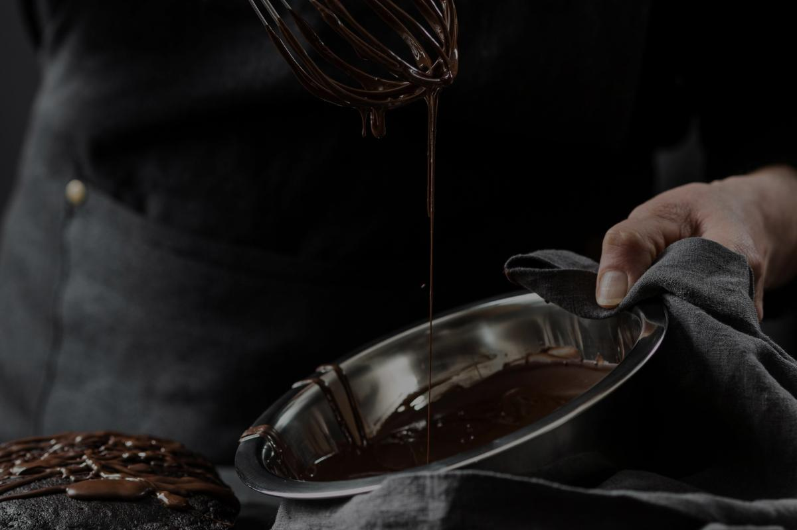

<section class="made-process section" id="made-process">
    <div class="container">
        <h2 class="made-process-title">how it`s <span class="top-accent">made?</span></h2>
        <ul class="made-process-descr">
            <li class="made-process-video">
                <picture>
                    <source srcset="../img/made/made-desktop@1x.jpg 1x, ../img/made/made-desktop@2x.jpg 2x" media="(min-width:1200px)" />
                    <source srcset="../img/made/made-tablet@1x.jpg 1x, ../img/made/made-tablet@2x.jpg 2x" media="(min-width:768px)" />
                    <source srcset="../img/made/made-mobile@1x.jpg 1x, ../img/made/made-mobile@2x.jpg 2x" media="(min-width:320px)" />
                                   
                </picture>
            </li>
            <li class="made-process-recepie">
                <h5 class="made-process-recepie-title">Try  our chocolates today and discover the perfect balance of flavor</h5>
                <ul class="made-process-recepie-text"> 
                    <li class="recepie-descr">Heat the milk in a saucepan without bringing it to a boil. Add sugar and cocoa powder.</li>
                    <li class="recepie-descr">At the same time, prepare a water bath. Melt the butter on it.</li>
                    <li class="recepie-descr">"Mix" the milk mixture and already liquid butter. Mix thoroughly with a silicone spatula so that the mass becomes uniform and silky.</li>
                    <li class="recepie-descr">Heat the mixture over low heat, letting it barely boil.</li>
                    <li class="recepie-descr">Pour the chocolate into special containers (can be replaced with ice molds). Allow to cool and harden.</li>
                </ul>
            </li>
        </ul>
    </div>
</section>